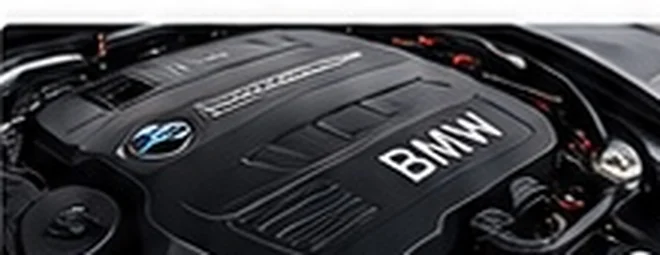
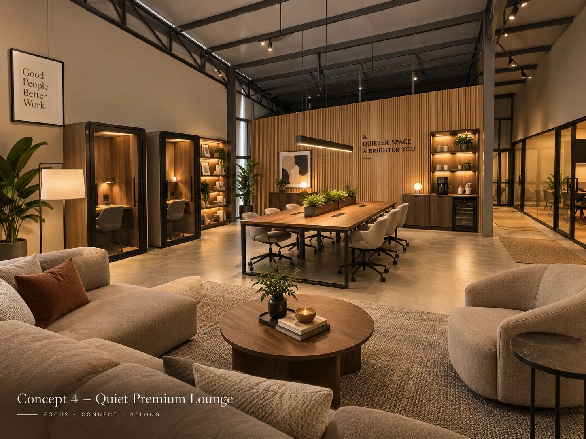

AAB / ALL ABOUT BIMMER
ศูนย์บริการ BMWระดับพรีเมียม
ดูแล BMW และรถยุโรปของคุณด้วยความใส่ใจ เครื่องมือพร้อม ทีมช่างเฉพาะทาง และพื้นที่รับรองลูกค้าที่สะดวกสบาย
AAB HQ · SERVICE CENTERSCROLL TO EXPLORE
ช่างผู้ชำนาญการทีมช่างเฉพาะทางรถยุโรป
Service Bay มาตรฐานพื้นที่รองรับงานบริการ
อุปกรณ์และเครื่องมือครบตรวจเช็กอย่างเป็นระบบ
ห้องรับรองลูกค้าพักผ่อนและทำงานได้
OUR SERVICES / 01
สอบถามบริการ ↗บริการครบวงจร สำหรับรถ BMW
ดูแลทุกความต้องการ ด้วยมาตรฐานงานบริการระดับพรีเมียม
OUR WORKSHOP / 02
ศูนย์บริการมาตรฐาน พร้อมอุปกรณ์ครบครัน
พื้นที่ Service Bay กว้างขวาง รองรับงานหลายประเภท พร้อมเครื่องมือสำหรับงานซ่อมและทีมช่างที่ใส่ใจรายละเอียดของรถทุกคัน
- Service Bay หลายช่อง รองรับรถได้พร้อมกัน
- เครื่องมือวิเคราะห์และตรวจเช็กระบบรถยนต์
- ทีมช่างที่มีประสบการณ์กับรถ BMW และรถยุโรป
- พื้นที่ทำงานสะอาด เป็นระเบียบ



ภาพพื้นที่ Lounge เป็นภาพคอนเซ็ปต์เพื่อการนำเสนอCUSTOMER LOUNGE / 03
Quiet Premium Lounge
พื้นที่รับรองที่มากกว่าการรอรถ
พื้นที่พักผ่อนและมุมทำงานระหว่างรอรับบริการ ออกแบบให้มีบรรยากาศสงบ สบาย และเป็นส่วนตัว
Wi-Fi สำหรับลูกค้า
Coffee Corner
Co-Working Space
พื้นที่นั่งพักผ่อน
FIND US / 04เปิด Google Maps / นำทาง↗
เดินทางมาที่ AAB
AAB HQ และ All About Bimmer เป็นชื่อเรียกศูนย์บริการเดียวกันในย่านลาดกระบัง กรุงเทพฯ กดแผนที่เพื่อดูพิกัดและเริ่มนำทางได้ทันที
AAB HQ / All About Bimmer · ลาดกระบังดูข้อมูลการเดินทางและที่ตั้ง
CONTACT & BOOKING / 05
นัดหมายเข้าศูนย์บริการ
สอบถามอาการรถ ขอคำแนะนำ หรือนัดหมายกับทีมงานผ่านช่องทางที่สะดวก
นัดหมาย / สอบถาม092-564-9623↗บริการหลังการขาย065-562-9898↗LINE OFFICIAL@allaboutbimmer↗เว็บไซต์www.aabgroups.com↗
LINE OFFICIAL
สแกน QR เพื่อเพิ่มเพื่อน
เปิด LINE Official ↗REQUEST AN APPOINTMENT
เตรียมข้อมูลเพื่อส่งให้ทีมงานทาง LINE (ยังไม่ใช่การยืนยันคิวอัตโนมัติ)